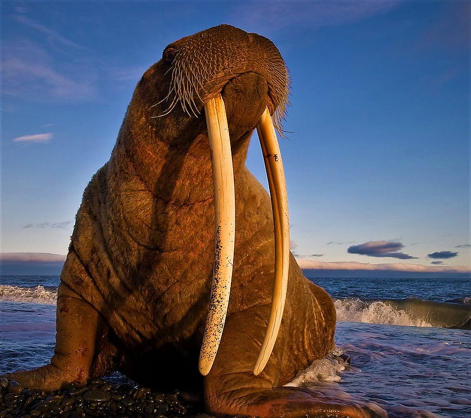
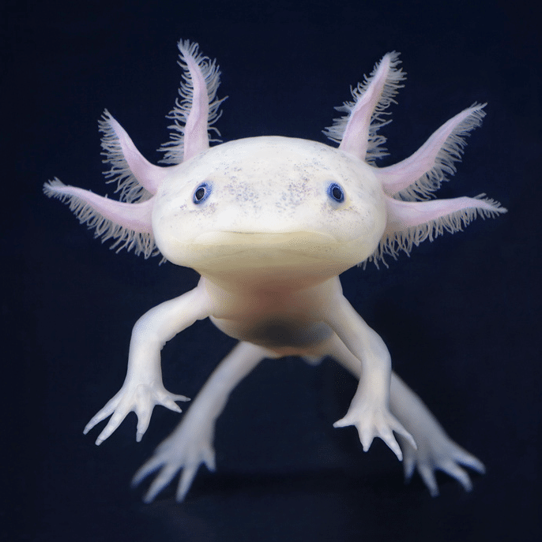

Dolphins are incredible. They are socially skilled, intelligent,
agile, joyful, and playful creatures that share many...

Walruses have long tusks and a prominent mustache. These large
marine mammals are found near the Arctic Circle. They are extremely
social and snort and bellow loudly...

The axolotl is a kind of amphibian, specifically a salamander, that
does not metamorphose naturally. Usually, amphibians...
The whale shark or Rhincodon typus is the world's largest recorded
living fish in the ocean. These unique fishes are filter feeders,
which draw...